1201 (B)
1202 (C)
1203 (B)
1204 (B)
1205 Fe(OH)3 [含TiO(OH)2]
1206 AlO2-、 MnO42-
; Fe(OH)3、Mg(OH)2、Cu(OH)2
1207 Ca2+、Mg2+、Zn(NH3)42+
; Al(OH)3、Fe(OH)3、TiO(OH)2
1208
沉淀
溶液
┌───────────┐
│
│
1209 第2种 ; 理由是加入NH4Cl可使Fe(OH)3胶体凝聚,由于NH4+浓度大,
减小Fe(OH)3对Zn2+的吸附,便于分离
1210 大
小
大
大
1211 (C)
1212 (B)
1213 1. C
;
2. B ; 3.
A
1214 (D)
1215 (D)
1216 (D)
1217 (D)
1218 (D)
1219 (C)
1220 95.2%
1221 45
1222 D;
C; B; A
1223 D = 49.5
1224
19 99.8%
1225
B
A
D
C
1226 有机溶剂萃取,
离子交换
1227 90.9% ;
97.2%
1228 6
1229
[HA]有
D
= ───────
[HA]水+[A-]有
[HA]有
[HA]水
= ──── ・ ────────
[HA]水
[HA]水+[A-]水
[H+]
= KD ─────
[H+]+Ka
1×10-1
(1) pH = 1.0时
D = 31×───────── = 30.4
1×10-1+2×10-3
V水/V有
E = [1 - (──────)n]×100% = 98.5%
D+V水/V有
1×10-5
(2) pH=5.0时, D
= 31×──────── =
0.15
1×10-5+×10-3
10
E = [1 - (──────)3]×100% = 4.4%
0.15+10
1230
127×2
m0 = 50.0×0.100×──── = 1.27(g)
1000
V水
萃取后留在水溶液中的碘量: m1= m0×─────
DV有+V水
50
= 1.27×────── =
0.0748(g)
8×100+50
(1.27-0.0748)×1000
c有= ────────── = 0.0470 (mol/L)
127×2×100
0.0470×10 = 0.0600×V(Na2S2O3)/2
V(Na2S2O3)=15.7
mL
1231
D
E = ───
D+R
已知E= 95%, R = 50/100=0.5
0.95×0.5
D = ────── = 9.5
0.05
50×0.1000×95%×10/100 = 0.475 (mmol)
1232
D 8
E =──── = ─────×100% = 0.93%
D+R 8+60/100
V(S2O32-)=0.100×60/100×0.93×10×2/0.0600=18.6 (mL)
1233
0.1000×17.9
c(I2)有 = ─────── = 0.0895 (mol/L)
2×10
0.100×50.0-0.0895×50.0
c(I2)水 = ────────────── = 0.0105 (mol/L)
50.0
c(I2)有
0.0895
D= ───── = ─────
= 8.5
c(I2)水 0.0105
1234
V水
(1) mn= m0(───────)n
DV有+V水
50 mn
100-99.8
(──────)n
= ─── = ────── =0.002
19.1×5+50
m0 100
解得 n= 6(次)
50
(2) (───────)n=
0.002
解得n = 4 (次)
19.1×10+50
1235
V水
(a) m1= m(──────) V水=V有
DV有+V水
1
1
m1=
m(───) =
0.018×(────) = 4.3×10-5 (g)
D+1
420+1
V水
(b) m2= m(───────)2
DV有+V水
100
m2= 0.018(───────)2
420×50+100
= 4.04×10-7
(g)
1236
D
D
E
= ─────×100% 即 90% = ──────×100%
V水
100
D+───
D + ───
V有
10
解得 D=90
90%×40×10-6
c = ───────── = 7.07×10-5
(mol/L)
50.94×10×10-3
A 0.384
e = ─── = ─────── = 5.4×103 [L/（mol・cm）]
b・c 1×7.07×10-5
1237
[HA]有 (100×0.1000-0.02000×20.00×4)/25.00
KD= ──── = ───────────────────
[HA]水 (0.02000×20.00)/25.00
= 21.00
1238 (C)
1239 (A)
1240 (C)
1241 (B)
1242 (D)
1243 (C)
1244 (B)
1245 (A)
1246 (C)
1247 (B)
1248 (C)
1249 (C)
1250 (A)
1251 1.
C
2.
B 3.
A
4. D
1252 Li+、K+、Ca2+、Fe3+
1253 (强)酸 ;
K+、 Rb+、 Cs+
1254
|
|
原水
|
原水通过阳
离子交换树脂
|
原水通过阴
离子交换树脂
|
原水依次通过阳、
阴离子交换树脂
|
|
EBT试验
(pH=10)
|
+
|
-
|
+
|
-
|
|
AgNO3
试验
|
+
|
+
|
-
|
-
|
|
pH试验
|
近中性
pH≈7
|
酸性(pH<7)
|
碱性(pH>7)
|
近中性(pH≈7)
|
|
结论
|
原水含Ca2+、 Mg2+、及Cl- 等阳、阴离子
|
能除去阳离子
取代出H+,
但不能除去
阴离子
|
能除去阴离子
取代出OH-,
但不能除去
阳离子
|
阳、阴离子
均被除去
达到纯水的目的
|
1255 强酸
HAc NaOH 酚酞
1256 磺酸基(-SO3H)
; 羧基(-COOH)、或酚羟基(-OH)等
季氨基[-N(CH3)3Cl]
; 伯氨基或仲氨基、叔氨基等
1257 C, B, A
1258 (1) 钠离子取代了所有酸式的质子,所以从每一种磷酸盐得到了3mmol Na+,
3×3 mmol
其浓度 [Na+]= ────── = 0.82 mol/L
(100+10) mL
3 mmol
(2) c(PO43-) = ──── = 0.027 mol/L, 为一弱碱溶液
110 mL
[OH-]=
[Kb1(c-[OH])]1/2 = [10-1.64(0.027-[OH-])]1/2
解得 [OH-]= 10-1.50mol/L
pH = 12.50
3201
(C)
3202 (C)
3203 (D)
3204 (C)
3205 (B)
3206 (C)
3207 (B)
3208 Mg2+ ,
Mg(OH)2
3209 MnO(OH)2
, CrO42-
3210 BaSO4
, Pb(OH)3-(或PbO22-)
3211 (D)
3212 (C)
3213
若含量过低难以测定，利用共沉淀法可使微量组分浓缩富集。有机共沉淀剂特点是：(1)引入不同功能团选择性高；(2)有机沉淀剂体积大富集效果好；(3)有机共沉淀剂在灼烧时易去除去不干扰微量组份测定。
3214 Mn(OH)2溶解度不大也不小，Mn将分别在沉淀与溶液中存在。Mn不干扰Fe3+、Al3+ 测定，但却干扰Ca2+、Mg2+测定(EDTA络合滴定)。为使Mn完全处于沉淀中,可同时加入H2O2氧化Mn2+成Mn(Ⅳ)以MnO(OH)2形式沉淀。
3215 29
3216 (B)
3217 20
3218 pH<pKa-2
3219 钅羊 离子,
FeCl4- , 溶剂, 萃取剂
3220 17
3221 57
3222 87%
3223 84 (注：先计算D，再计算E)
3224 KD[H+]
━━━━━
, pH=pKa
[H+]+Ka
3225 1.9×10-4
3226 D
Vw
━━━━━×100%
[1-(━━━━━━)n]×100%
D+VW/Vo
DVo/n+Vw
3227 D = KD/(1+[I-]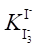
)
[I-]<<
3228
D
4.0
(1)因E = ━━━━━━×100% 0.99 = ━━━━━ 解得 V0=270 (mL)
D+Vw/V0
4.0+10/V0
Vw
10
(2)E = [1-(━━━━━━)n ]×100% E = [1-(━━━━━━)3]×100% = 99.2%
DV0/n+Vw
4×10+10
3229
420
(a)E = ━━━×100%=99.76%
420+1
留在水相中I2为0.009×(1-E)=2×10-5(g)
50
(b)E
= [1-(━━━━━━━)2]×100%=99.9978%
420×25+50
留在水相中I2为0.009×(1-E)=2×10-7(g)
3230
10.20-2.50
E=━━━━━━━━×100%=75.5 %
10.20
D
E=
━━━━×100%
解得 D=7.7
D+50/20
3231 解 (a)
KD[H+]
3×10-4.00
D
= ━━━━━ = ━━━━━━━ = 2.6
[H+]+Ka
10-4.00+10-4.8
2.6
E
= ━━━━━━×100% =
39.4%
2.6+100/25
丁酸在有机相中的浓度为0.10×100×0.394/25 = 0.16 (mol/L)
(b) 3×10-10.00
D
= ━━━━━━━ = 10-4.7
10-10.00+10-4.8
10-4.7
E
= ━━━━━━━×100%
= 5.0×10-4
%
10-4.7+100/25
有机相中丁酸的浓度仅为0.10×100×5.0×10-6/25 = 2.0×10-6 (mol/L)
3232
KD[H+]
根据D = ━━━━
计算得
[H+]+Ka
pH 6
7 8 9
10
DHA 0.91 0.1
0.01 0.001 0.0001
DHB 1000 1000 1000
910 500
由计算结果知，pH至少高于9，HA和HB才能完全分离，即最低pH为9
3233
KD[H+]
由于D = ━━━━
[H+]+Ka
KD×10-1.16
2.00
= ━━━━━━━
10-1.16+Ka
KD×10-6.39
1.40 = ━━━━━━━
10-6.39+Ka
2.00
1.40
由上两式得2.00+━━━━━Ka = 1.40+━━━━━Ka
10-1.16
10-6.39
解得Ka=10-6.76，故KD=2.00
3234
100
5次萃取后，水中剩余A为其总量的(━━━━━━━)5 = 0.19
2.0×20+100
所以水相中剩余A的浓度为0.120×0.19 = 0.022 (mol/L)
3235 29
E
= ━━━━━━×100% =
0.853%
29+100/20
5.23×0.1020
c(Br2)
= ━━━━━━━━━━━ =
0.0181 (mol/L)
2×(1.00-0.853)×100
3236
(1) co
[HL]o
KD
D = ━━ = ━━━━━━━━━━ = ━━━━━━━━━━━━━
cw [H2L+]w+[HL]w+[L-]w
[H+]w/Ka1+1+Ka2/[H+]w
(2) E最大时D也应最大，故D表达式中分母部分应取极小值，即
d([H+]w/Ka1+1+Ka2/[H+]w)
━━━━━━━━━━━━━━ = 0
d[H+]w
______ __________________
解得[H+]w =√Ka1Ka2 = √1.0×10-5×2.0×10-10 = 4.5×10-8 (mol/L)
pH=7.35
(3)D的最大值为
720
D = ━━━━━━━━━━━━━━━━━━=720
4.5×10-8
2.0×10-10
━━━━━━ +1× ━━━━━━
1.0×10-5
4.5×10-8
720
E
= ━━━━━×100% =
99.9%
720+1
3237
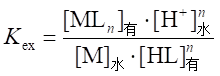
分子分母同乘[MLn]水 ，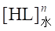
，并将分子上[MLn]用
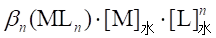
表示，分母中用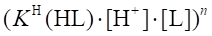
表示，分子分母同消去相同项后得到
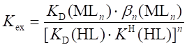
或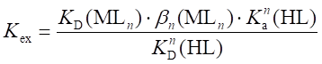
3238
KD(MLn)是螯合物MLn的分配系数，其值越大，螯合物进入有机相越多，Kex值大;bn(MLn)是螯合物的总的稳定常数，其值越大，越易进入有机相，Kex值大;KD(HL)是螯合剂的分配系数，其值过小表示在水相浓度大，有利于螯合物形成Kex大; 是螯合剂的酸形成常数，其值越小，表示酸解离度大，[L]值大有利于螯合物形成,Kex大。
3239 (D)
3240 质在固定相中的浓度
━━━━━━━━━━━, 长
溶质在流动相中的浓度
3241 高, 慢, 低, 快, 8% ~12%
3242 小, 小
3243 大, 大
3244 越大, Li+<Na+<K+<Rb+<Cs+
3245 Fe3+
, FeCl4-, Al3+
3246 清洗和转型, 湿法装柱, 交换, 洗脱, 树脂再生
3247 阳离子, 阴离子, 阴、阳离子树脂混合
3248
Cr(III), Cr(VI)
3249 NaOH , 酚酞
3250
HCl, 酚酞，甲基红(MR)或甲基橙(MO)
3251 HCl , 甲基红
3252 NaOH , 甲基橙(甲基红)或酚酞
3253 气相色谱, 液相色谱, 高效液相色谱, 纸色谱, 薄层色谱
3254 制板, 点样, 展开, 测定
3255 滤纸上吸附的水, 与水不相溶的有机溶剂(即展开剂)
3256 原点至层析点中心的距离
━━━━━━━━━━━━
, 0.02
原点至溶剂前沿的距离
3257 设A，B两物质的斑点最大可前进的距离是x，y
x/8=0.4 x=3.2
(cm)
y/8=0.6 y=4.8
(cm)
故两斑点之间最大距离为1.6cm
3258 (0.1020×100-0.1102×8.06×4)/1.210 = 5.494 (mmol/g)
3259 设其中含MgCl2，NaCl各为x，y g。则有
x+y =
0.2152
2x
y
━━━ + ━━━ = 0.1102×35.25/1000
95.21 58.44
两式联立，解得 y = 0.1635 ; x = 0.0517
0.0517
w(MgCl2)
= ━━━━×100% = 24.02%
0.2152
0.1635
w(NaCl)
= ━━━━×100% = 75.98%
0.2152
3260(D)
5201 因为 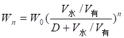
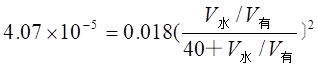
V水/V有=2
5202 (C)
5203 Ba2+
5204 (B)
5205 AuCl4-
5206 Cr2O72-,
H+
5207 设A、B两物质色谱斑点的中心距原点分别为x1,x 2 cm,则
x1/10 = 0.36 x2/10
= 0.40
x2-x1
= (0.40-0.36)´10 = 0.4(cm)
欲分离两物质，两斑点中心距离至少为(0.20+0.40)/2 = 0.30cm,而实际两斑点中心距离为0.4 cm ,故在此条件下A B两物质可得到完全分离。
5208
(1)水合离子半径
(2)离子所带电荷数
5209
C > B > A
5210
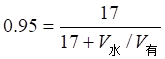
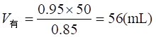
5211 E=[1-(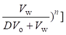
×100%
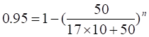
n = 2次
5212 0.87=1-(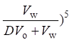
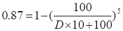
D = 5.04
5213 0.84=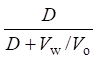
D = 5.25
0.97=1-(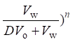
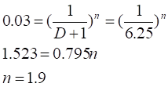
即n=2(次)
5214
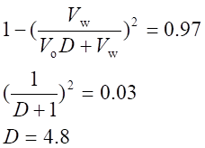

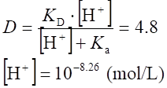
pH=8.26 即水溶液的pH值至少要大于8.26
5215
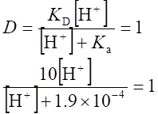
[H+]=2.1×10-5 (mol/L)
pH=4.6
5216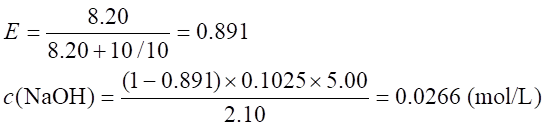
5217 应将Cr3+ 氧化成CrO42-,
再用氨水沉淀Fe3+,
铬以铬酸根形式保留在溶液中。
5218 CaCO3 ,
共沉淀
5219
H，
Cl
5220 NH4HF2
5221 Na+ ,
Mg2+ , Al3+
5223 (B)
5224 95.1 %
5225 不进入固定相，随流动相一起移动。
5226 Al2O3
, SiO2 , 聚酰胺
5227 将钢铁溶解, 使铁、铝转化为Fe3+, Al3+
后，加入足量的NaCl (或HCl) 使Fe3+ 转化为FeCl4-，再通过阴离子交换树脂，在流出液中测定Al3+。
5228 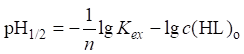
5229 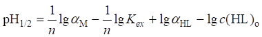
5230 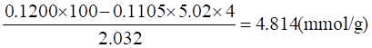
5231 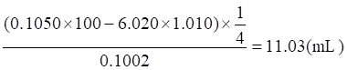
5232 200倍
5233 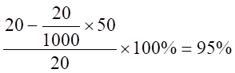
5234 根据分离度的定义
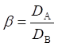
EA=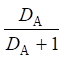
DA=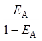
DB=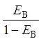
则 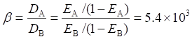
5235
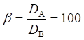
所以DA应为DB的100倍
5236 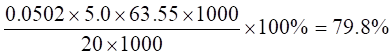
5237 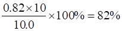
5238 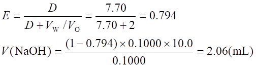
5239 上述溶液混合后，不会产生Mg(OH)2沉淀。
因为：
混合后， c(Mg2+)=0.10 mol/L; c(Fe3+)=0.10
mol/L c(NH3)=0.40 mol/L
铁可沉淀完全： Fe3++3NH3+3H2O=Fe(OH)3↓+3NH4+
产生0.30mol/L NH4+, 故溶液的[H+]为
[H+]=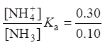
×10-9.26=10-8.78(mol/L)
若生成Mg(OH)2沉淀，则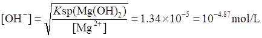
即[H+]=10-9.12, 故不会生成Mg(OH)2沉淀。
5240 (B)
5241 (D)
5242 (D)
5243 (C)
5244 (C)
5245 n(I2):n(S2O32-)=1:2
滴定时只取10mL水相
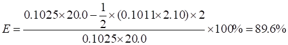
5246
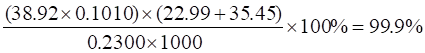
5247 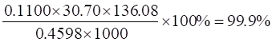
5248 Li+, Na+,
K+, Rb+, Cs+
5249 Cr2O72-(或Cr(VI)); Cr3+
5250 (A)
5251 设x1, x2分别为A�pB两物质斑点距原点的距离：
则 x1/y=0.35 x2/y
=0.45
x2-x1=0.40+0.25=0.65
又 x2-x1=(0.45-0.35)y
=0.65
∴y =6.5(cm)
5252 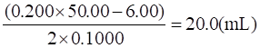
5253 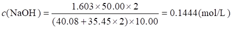
5254 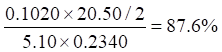
5255 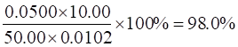
5256 200
5257
Wn=Wo(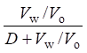
)n =10×(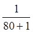
)3=1.9×10-5(mg)
5258 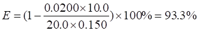
(1)
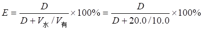
5259 E=1-(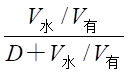
)3
0.015=()3 D=30.6
又 D＝KD ()
KD=
5260
5261 R=5;
V氯仿=V水/R=50/5=10(mL)
5262[M][S¢]=Ksp(1+)=K¢sp
简化： [M][S¢]=
[H+]=
Cd2+沉淀完全的酸度， [H+]=0.34mol/L;
Zn2+不沉淀的酸度， [H+]=0.21mol/L
酸度应控制在[H+]为0.21~0.34mol/L范围内。
5263 cw=(mol/L)
co==0.315
(mol/L)
D==8.5
E===0.630
Vo=(mol/L)
5264 (D)
5265 l=12,
12+4+3=19(cm)